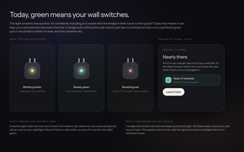
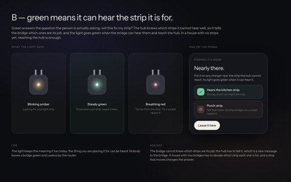
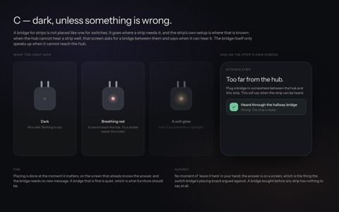

Light strips · from another checkout
The bridge light
Not in this checkout yet. Drawn in home-hub-a on puck-split-repos, 7 commits ahead of development; design/bridge-light/ was last changed there on 5 October. A pick made here goes back to the session working in home-hub-a; the boards arrive in this checkout when that branch is merged.
To pickA, B or C — or something else, described in words; the answer has been outside the drawn set before.

Today — green means your wall switches A — green means it reached the hub
A — green means it reached the hub
B — green means it can hear the strip it is for
C — dark, unless something is wrong
Decided 5 Oct — A. Green means it reached the hub. B and C are kept on their own page, as the record of why.
TodayGreen means your wall switches
Drawn from the shipped light (lightRefresh in the bridge’s firmware): green needs the switch mesh to be heard, and a bridge that will only ever carry strips has no switches to hear…